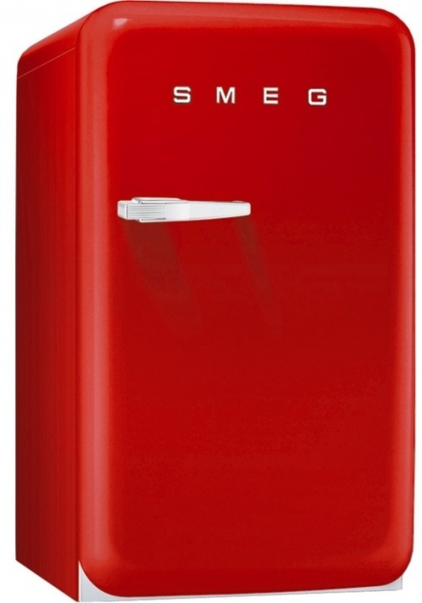
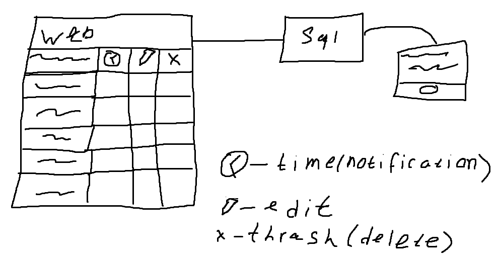
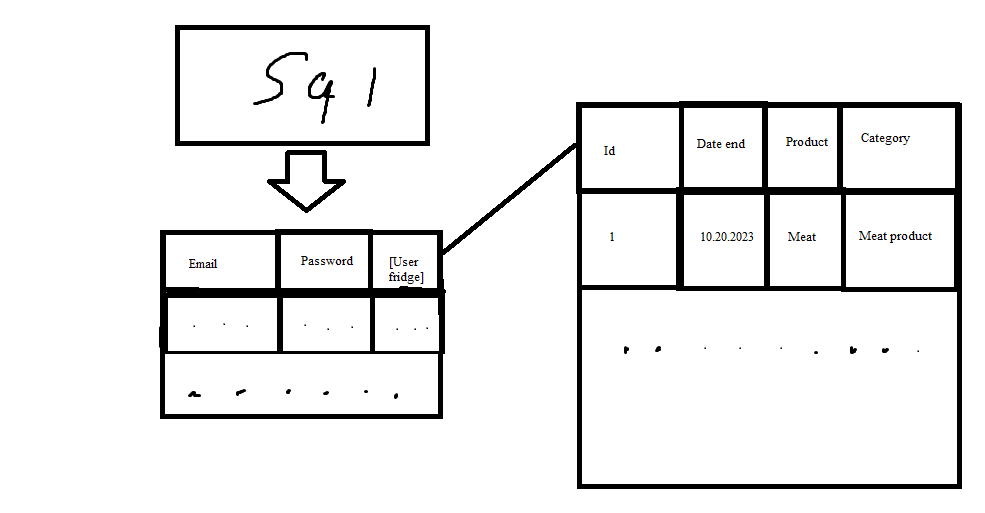

Главное
Авторизация
О приложении
Контакты
Описание
Холодильник - Устройство, поддерживающее низкую температуру в теплоизолированной камере. Применяется обычно для хранения пищи или предметов, требующих хранения в прохладном месте. В развитых странах бытовой холодильник имеется почти в каждой семье. Работа холодильника основана на использовании холодильной машины, переносящей тепло из рабочей камеры холодильника наружу, где оно рассеивается во внешнюю среду. Существуют также коммерческие холодильники с большей холодопроизводительностью, которые используются на предприятиях общественного питания и в магазинах и промышленные холодильники, объём рабочей камеры которых может достигать десятков и сотен кубометров, они используются, например, на мясокомбинатах, промышленных производствах
Виды:Компрессионный, абсорбционный, термоэлектрический и холодильник с вихревыми охладителями
Помещения для хранения продуктов, наполняемые льдом, появились несколько тысяч лет назад. Для императора Нерона слуги заготавливали на замёрзших водоёмах в горах снег и лёд. В Тёмные века Южная Европа долгое время даже не подозревала, что снег и лёд способны принести пользу в хозяйстве. Знаменитый путешественник и купец Марко Поло после длительного пребывания в Китае написал книгу, в которой описал все достоинства льда и снега.
Начиная с XVIII века ёмкости из фаянса и фарфора заполнялись бутылками с вином, после чего сверху укладывали колотый лёд. Своеобразный холодильник подавали прямо к столу.
В России широко использовались ледники, которые представляли собой сруб, врытый в землю. Набитый большим количеством снега и льда, укрытый толстым настилом, поверх которого была насыпана земля и уложен дёрн, такой ледник позволял хранить длительное время скоропортящиеся продукты.
В 1686 году итальянец Франческо Прокопио открыл в Париже кафе «Прокоп», которое пользовалось популярностью у парижан за счёт того, что в нём продавали замороженные щербеты и мороженое.
Массово использовались в середине XIX века домашние ледники. Внешне их невозможно было отличить от обычных кухонных шкафов. Кроличьи шкурки для теплоизоляции уже не использовались, вместо них засыпались опилки и пробка. Отсек, который заполнялся льдом, в одних моделях был под камерой для продуктов, а в других над ней. Через кран талая вода сливалась в специальный поддон.
14 июля 1850 года американский врач Джон Гори впервые продемонстрировал процесс получения искусственного льда в созданном им аппарате. В своём изобретении он использовал технологию компрессионного цикла, которая применяется в современных холодильниках, а сам аппарат мог служить одновременно морозильником и кондиционером.
В 1857 году был создан первый железнодорожный вагон-рефрижератор.
Данный проект сделан в связке с sql.Предзначен для визуализации таблицы из приложения FreshFridge - приложение показывающее срок годность продукта на мобильных устройствах.
Строение проекта
Строение базы данных
Смысл
- Актуальность:
- Мы живём в мире где с каждым днём у нас становится меньше пищевых ресурсов, следовательно человек должен распоряжаться ресурсами экономнее, чтобы сберечь ресурсы природы, а также экономить деньги.
- Задача:
- Реализовать проект, чтобы люди знали о том, что в их холодильнике есть продукты у которых скоро закончится срок годность.
- Будущее:
- Отправка метаданных крупным магазинам таким как "Магнит","Пятёрочка" может привести к тому, что они будут отправлять продукты в те районы страны где их дефицит.
- Реализация:
- На данный момент проект реализован на мобильном устройсте с операционной системой android(10) на языке программирования java. К приложению подеключена офлайн база данных sqlite.
- Планы:
- Доработать данное приложение и сделать web версию данного приложения с тем же набором функций, что и на мобильном устройстве.